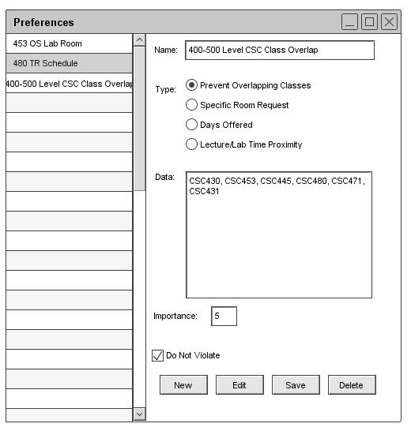

2.4.2. Administrator Preference Setting
Scheduler administrators have the ability to set 2 options that will effect how the scheduler generation operation handles
the preferences. The first is the Importance level, this can be set from 1 to 10 ( 1 being a low importance and 10 being a
high importance). The higher the importance the more priority that the generation will give to that preference. There
is also another checkbox option, "Do Not Violate". By selecting this checkbox the user can essentially turn a
preference into a schedule constraint. If the generation is not able to fulfill preferences that have been selected
as "Do Not Violate", then no schedule is generated.

Figure 42: Advanced Preference Options
Prev: preferences-remove
| Next: manual editing
| Up: advanced schedule generation and editing
| Top: index